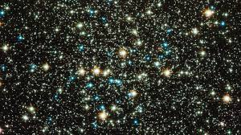
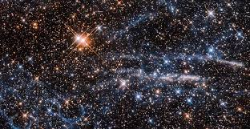
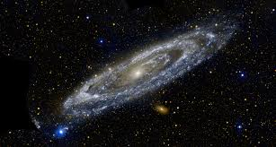
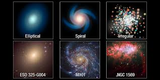

Space
Space , also known as outer space, is the near-vacuum between celestial bodies. It is where everything (all of the planets, stars, galaxies and other objects) is found.
On Earth, space begins at the Kármán line (100 km above sea level). The Kármán line is the altitude where space begins. It is 100 km (about 62 miles) high.
It commonly represents the border between the Earth's atmosphere and outer space. This is not a natural boundary but is a convention used by scientists and diplomats.

Universe
The Universe is everything we can touch, feel, sense, measure or detect. It includes living things, planets, stars, galaxies, dust clouds, light, and even time. The Universe is incredibly huge. It would take a modern jet fighter more than a million years to reach the nearest star to the Sun. Travelling at the speed of light (300,000 km/s), it would take 100,000 years to cross our Milky Way galaxy alone. No one knows the exact size of the Universe, because we cannot see the edge – if there is one. All we do know is that the visible Universe is at least 93 billion light years across. (A light year is the distance light travels in one year – about 9 trillion km.)
Galaxy
A galaxy is a collection of billions of stars, their planetary systems and interstellar clouds which are present in the empty spaces between stars. The universe is made up of innumerable such galaxies. Galaxies differ in structure and shape. We can divide them into three types : spiral, elliptical and irregular galaxies. Our galaxy is a spiral galaxy and is called the Milky Way and Mandakini.
  Watch this Interesting Video below:-